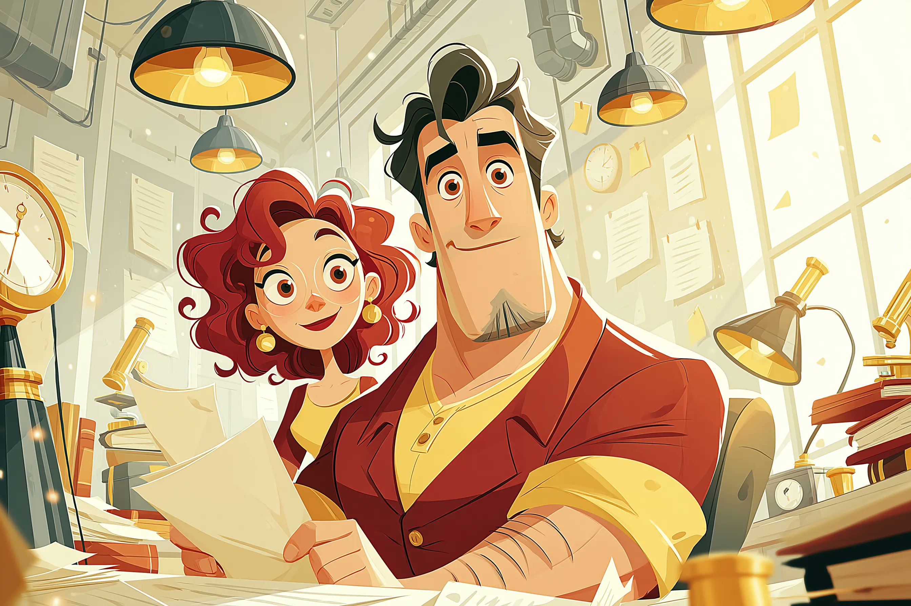

After working on a few production React codebases that crossed the 200k LOC mark, I wanted to share some patterns that have genuinely helped teams scale without drowning in complexity. None of this is novel, but it is the stuff I wish someone had told me three years ago.
1. Feature-based folders over type-based folders
The single biggest mistake I see is organizing by file type (all components together, all hooks together, all utils together). This works at 5k LOC and becomes a navigation nightmare at 50k. Group by feature instead:
src/
features/
auth/
components/
hooks/
api.ts
index.ts
dashboard/
components/
hooks/
api.ts
index.tsEach feature becomes a self-contained module with a public API via index.ts. Nothing outside the feature should reach into its internals.
Code sample: a typed feature boundary
Here is how a typical feature barrel file looks. Notice we only export the public surface — internals stay private:
// features/auth/index.ts
import { LoginForm } from './components/LoginForm';
import { useAuth } from './hooks/useAuth';
import { login, logout } from './api';
import type { AuthUser, AuthSession } from './types';
export { LoginForm, useAuth, login, logout };
export type { AuthUser, AuthSession };
// 🔒 Internal modules (api client, token store) are NOT re-exported.
// Importing them from outside this folder is a lint error.Code sample: React Query for server state
Stop pouring server data into Redux. React Query handles caching, invalidation, and retries for free:
// features/dashboard/hooks/useRepoStats.ts
import { useQuery } from '@tanstack/react-query';
export function useRepoStats(repoId: string) {
return useQuery({
queryKey: ['repoStats', repoId],
queryFn: () => fetchRepoStats(repoId),
staleTime: 60_000, // fresh for 1 minute
gcTime: 5 * 60_000, // cached for 5 minutes after unmount
retry: (failureCount, err) => err.status !== 404 && failureCount < 3,
});
}
// Consumer — no useEffect, no useState, no boilerplate.
const { data, isPending, error } = useRepoStats('ghrank/api');Code sample: splitting a mega-component
Before (config-driven, 40+ props) vs after (composable, 3 small components):
// ❌ Before — a configuration API disguised as a component
<Button
variant="primary"
size="md"
icon="arrow-right"
iconPosition="right"
isLoading={false}
fullWidth={false}
onClick={handleNext}
/>
// ✅ After — small, composable pieces
<ButtonGroup fullWidth>
<Button variant="primary" onClick={handleNext}>Continue</Button>
<IconButton icon="arrow-right" aria-label="Next step" />
</ButtonGroup>Code sample: a Python scoring pipeline
For the data side, here is a minimal time-decay scorer we run nightly:
# scoring/time_decay.py
from datetime import datetime, timedelta
from typing import Iterable
HALF_LIFE_DAYS = 180
def time_decay_weight(event_time: datetime, now: datetime | None = None) -> float:
"""Exponential decay — recent events weigh more."""
now = now or datetime.utcnow()
age_days = max((now - event_time).days, 0)
return 0.5 ** (age_days / HALF_LIFE_DAYS)
def score_repo(events: Iterable[dict]) -> float:
return sum(
e['weight'] * time_decay_weight(e['timestamp'])
for e in events
)Code sample: shell one-liners we use in CI
# Compute the diff between two scoring snapshots
$ jq -S '.repos[] | {name, score}' v4.1.json > a.txt
$ jq -S '.repos[] | {name, score}' v4.2.json > b.txt
$ diff -u a.txt b.txt | delta # pretty side-by-side
# Bust the edge cache after a deploy
$ curl -X POST "$CDN_HOST/purge" \
-H "Authorization: Bearer $CDN_TOKEN" \
-d '{"patterns": ["/api/repos/*"]}'Code sample: the full scoring scheduler (long)
This is the complete nightly scheduler that orchestrates repo discovery, cloning, scoring, and snapshot publishing. It is intentionally long — use the Expand/Collapse button on the code block to read it in full.
# scoring/scheduler.py — nightly orchestration entrypoint
"""
GHRANK nightly scoring scheduler.
Pipeline stages:
1. Discover repos from the seed list + GitHub trending
2. Clone (shallow) + extract metadata
3. Run signal extractors (stars, forks, issues, PRs, releases, contributors)
4. Apply time-decay weighting + community signals
5. Normalize + rank
6. Publish snapshot to the API + bust CDN cache
"""
import asyncio
import json
import logging
import os
import shutil
import subprocess
import sys
from dataclasses import dataclass, field
from datetime import datetime, timezone
from pathlib import Path
from typing import Any, Iterable
from redis import Redis
from rq import Queue
from .time_decay import score_repo, time_decay_weight
from .extractors import (
extract_stars,
extract_forks,
extract_issues,
extract_prs,
extract_releases,
extract_contributors,
)
from .publish import publish_snapshot, bust_cdn
from .storage import SnapshotStore, RepoRecord
logger = logging.getLogger("ghrank.scheduler")
logger.setLevel(logging.INFO)
REDIS_URL = os.getenv("REDIS_URL", "redis://localhost:6379/0")
QUEUE_NAME = os.getenv("SCORING_QUEUE", "ghrank-scoring")
CLONE_DIR = Path(os.getenv("CLONE_DIR", "/tmp/ghrank-clones"))
SEED_LIST = Path(os.getenv("SEED_LIST", "config/seed_repos.txt"))
# Repos below this composite score are excluded from the published snapshot.
MIN_PUBLISH_SCORE = float(os.getenv("MIN_PUBLISH_SCORE", "0.42"))
# How many repos to process concurrently. Each repo does network I/O
# (clone + GitHub API), so we keep this modest to avoid rate limits.
CONCURRENCY = int(os.getenv("SCORING_CONCURRENCY", "8"))
@dataclass
class ScoringJob:
repo_url: str
repo_name: str
priority: int = 0
enqueued_at: datetime = field(default_factory=lambda: datetime.now(timezone.utc))
@property
def key(self) -> str:
return f"job:{self.repo_name.replace('/', ':')}"
async def discover_repos() -> list[str]:
"""Build the candidate list from the seed file + GitHub trending."""
repos: list[str] = []
if SEED_LIST.exists():
repos.extend(
line.strip()
for line in SEED_LIST.read_text().splitlines()
if line.strip() and not line.startswith("#")
)
# GitHub trending is scraped (off-GitHub) and pushed to Redis by a
# separate worker. We just drain the list here.
redis = Redis.from_url(REDIS_URL, decode_responses=True)
while True:
item = redis.lpop("ghrank:trending")
if not item:
break
if item not in repos:
repos.append(item)
logger.info("discovered %d candidate repos", len(repos))
return repos
def clone_repo(repo_url: str, dest: Path) -> bool:
"""Shallow-clone a repo. Returns True on success."""
if dest.exists():
shutil.rmtree(dest, ignore_errors=True)
try:
subprocess.run(
["git", "clone", "--depth", "1", "--quiet", repo_url, str(dest)],
check=True,
timeout=120,
capture_output=True,
)
return True
except subprocess.CalledProcessError as exc:
logger.warning("clone failed for %s: %s", repo_url, exc.stderr.decode()[:200])
return False
except subprocess.TimeoutExpired:
logger.warning("clone timeout for %s", repo_url)
return False
async def score_one(repo_url: str) -> RepoRecord | None:
"""Full per-repo pipeline. Returns a RepoRecord or None on failure."""
name = repo_url.rstrip("/").split(":")[-1].replace(".git", "")
dest = CLONE_DIR / name.replace("/", "_")
if not clone_repo(repo_url, dest):
return None
try:
signals: dict[str, Any] = {}
signals.update(extract_stars(dest))
signals.update(extract_forks(dest))
signals.update(extract_issues(dest))
signals.update(extract_prs(dest))
signals.update(extract_releases(dest))
signals.update(extract_contributors(dest))
events = [
{"weight": float(s.get("weight", 1.0)), "timestamp": s["timestamp"]}
for s in signals.values()
if "timestamp" in s
]
score = score_repo(events)
if score < MIN_PUBLISH_SCORE:
logger.info("skipping %s (score %.3f below threshold)", name, score)
return None
return RepoRecord(name=name, url=repo_url, score=score, signals=signals)
except Exception:
logger.exception("scoring failed for %s", name)
return None
finally:
shutil.rmtree(dest, ignore_errors=True)
async def run_pipeline() -> dict[str, Any]:
"""Run the full nightly pipeline. Returns a summary dict."""
started = datetime.now(timezone.utc)
logger.info("pipeline started at %s", started.isoformat())
repos = await discover_repos()
if not repos:
logger.warning("no repos to process; aborting")
return {"status": "empty", "started": started.isoformat()}
sem = asyncio.Semaphore(CONCURRENCY)
async def bounded(repo_url: str) -> RepoRecord | None:
async with sem:
return await score_one(repo_url)
records = await asyncio.gather(*[bounded(r) for r in repos])
valid = [r for r in records if r is not None]
valid.sort(key=lambda r: r.score, reverse=True)
store = SnapshotStore()
snapshot_id = await store.save_snapshot(valid)
await publish_snapshot(snapshot_id, valid)
await bust_cdn(["/api/repos/*"])
finished = datetime.now(timezone.utc)
duration = (finished - started).total_seconds()
logger.info(
"pipeline finished: %d/%d repos scored in %.1fs (snapshot=%s)",
len(valid), len(repos), duration, snapshot_id,
)
return {
"status": "ok",
"started": started.isoformat(),
"finished": finished.isoformat(),
"duration_s": duration,
"discovered": len(repos),
"scored": len(valid),
"snapshot_id": snapshot_id,
}
def enqueue_manual(repo_url: str, priority: int = 10) -> str:
"""Manually enqueue a single repo for out-of-band scoring."""
redis = Redis.from_url(REDIS_URL, decode_responses=True)
queue = Queue(QUEUE_NAME, connection=redis)
job = queue.enqueue(
"ghrank.worker.score_one_job",
repo_url,
priority=priority,
job_timeout=300,
)
return job.id
if __name__ == "__main__":
logging.basicConfig(
level=logging.INFO,
format="%(asctime)s %(levelname)s %(name)s: %(message)s",
)
summary = asyncio.run(run_pipeline())
print(json.dumps(summary, indent=2))
sys.exit(0 if summary["status"] == "ok" else 1)2. Treat the data layer as a first-class citizen
Most performance problems in large React apps are actually data-fetching problems. Use a real data library (React Query, SWR, Apollo) and stop managing server state in useState.

Server state is not your state. It is a cache of someone else’s data. Treat it accordingly.
3. Three rules for state
- Server state — belongs in a data library, never in Redux or context.
- URL state — anything that should survive a refresh goes in the URL (search params, route params).
- Client state — the smallest category. If you have a lot here, you are probably duplicating server state.

A quick note on composition
Prefer small, composable components over configurable mega-components. A <Button> with 40 props is a sign you have built a configuration API, not a component. Split it into <Button>, <IconButton>, and <ButtonGroup> and your life gets easier.
Curious what others are doing — especially anyone who has migrated a large app to the App Router. Drop your structure below.